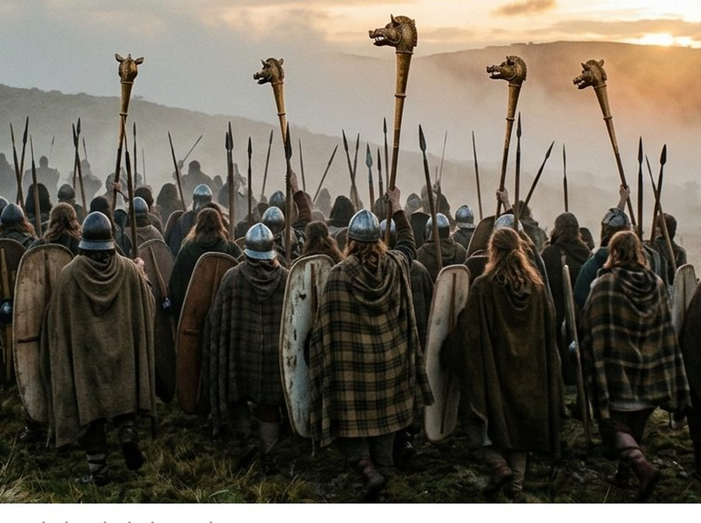

El rugido del carnyx: el arma sonora que aterraba a las legiones romanas
Imaginamos a los guerreros celtas cargando en silencio o entre gritos desordenados, pero el tesoro de Tintignac, hallado en el centro de Francia, reveló en 2004 que su arma más temible no cortaba: sonaba. Siete carnyces de bronce, instrumentos verticales de hasta dos metros rematados en cabezas de jabalí con fauces articuladas, aparecieron enterrados junto a un santuario galo, uno de ellos casi intacto tras dos mil años bajo tierra. Autores como Polibio y Diodoro Sículo ya describían su rugido como algo diseñado para aterrorizar: un sonido gutural y metálico que las legiones oían antes de ver a un solo celta, alzado por decenas de músicos sobre las cabezas del ejército para que ninguna formación enemiga pudiera ignorarlo. El Carnyx de Deskford, encontrado en Escocia en 1816 y hoy en el Museo Nacional de Escocia, confirmó que el diseño se repetía de Britania a los Balcanes: no era un capricho local, sino un arma estandarizada de guerra psicológica. Qué frecuencias producía realmente y por qué resultaban tan difíciles de soportar para un legionario formado en la disciplina del silencio es lo que desarrollamos en la edición completa.
Suscríbete para leer más →